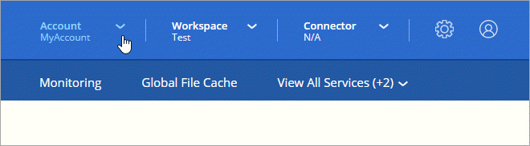
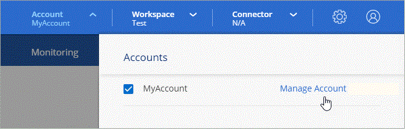
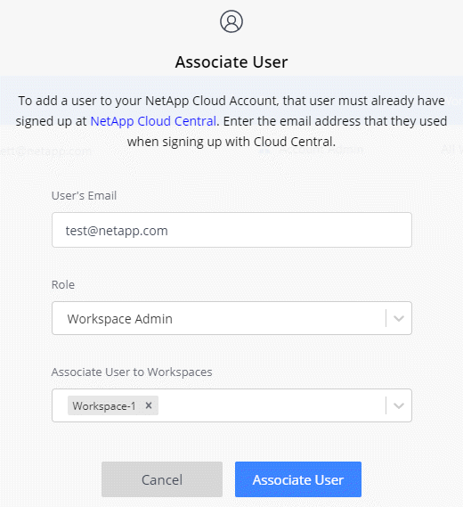
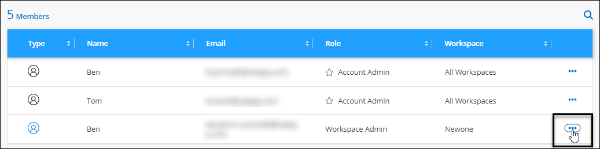
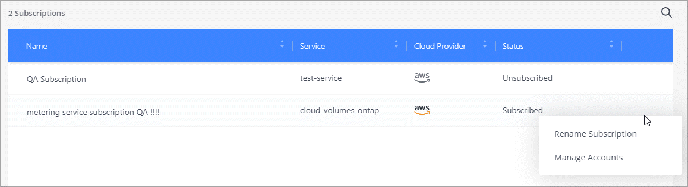

ドキュメントの変更をリクエスト
ドキュメントの変更をリクエスト GitHub で編集
GitHub で編集 寄稿者向けガイド
寄稿者向けガイドネットアップアカウントの管理
"初期セットアップを実行したあと"では、後でユーザー、サービスアカウント、ワークスペース、コネクタ、およびサブスクリプションを管理することで、アカウント設定を管理できます。
テナンシー API を使用してアカウントを管理します
API 要求を送信してアカウント設定を管理する場合は、 _Tenancy _API を使用する必要があります。この API は、 Cloud Volumes ONTAP の作業環境の作成と管理に使用する Cloud Manager API とは異なります。
ユーザの作成と管理
アカウント内のユーザーは、アカウントのワークスペース内のリソースを管理するためにアクセスできます。
ユーザを追加する
Cloud Central ユーザをネットアップアカウントに関連付けて、これらのユーザが Cloud Manager で作業環境を作成および管理できるようにします。
-
ユーザーがまだ行っていない場合は、にアクセスするようにユーザーに依頼します "NetApp Cloud Central" 登録してください。
-
Cloud Manager の上部で、 * Account * ドロップダウンをクリックします。

-
現在選択されているアカウントの横にある ［ * アカウントの管理 * ］ をクリックします。

-
メンバータブで、 * ユーザーを関連付け * をクリックします。
-
ユーザの E メールアドレスを入力し、ユーザのロールを選択します。
-
* アカウント管理者 * ： Cloud Manager で任意の操作を実行できます。
-
* ワークスペース管理者 * ：割り当てられたワークスペースでリソースを作成および管理できます。
-
* Compliance Viewer * ：クラウドデータセンスのコンプライアンス情報のみを表示し、アクセス権限のあるワークスペースのレポートを生成できます。
-
* SnapCenter Admin* ： SnapCenter サービスを使用して、アプリケーションと整合性のあるバックアップを作成し、それらのバックアップを使用してデータをリストアできます。_ このサービスは現在ベータ版です。 _
-
-
Workspace Admin または Compliance Viewer を選択した場合は、 1 つ以上のワークスペースを選択してそのユーザーに関連付けます。

-
[ 関連付け（ Associate ） ] をクリックします。
ユーザには、 NetApp Cloud Central の「 Account Association 」というタイトルの E メールが送信されます。 E メールには、 Cloud Manager にアクセスするために必要な情報が記載されています。
ユーザの削除
ユーザが割り当てを解除すると、ネットアップアカウントのリソースにアクセスできなくなります。
-
Cloud Manager の上部で、 * Account * ドロップダウンをクリックし、 * Manage Account * をクリックします。
-
メンバー (Members) タブで ' ユーザーに対応する行のアクションメニューをクリックします

-
[ ユーザーの関連付けを解除（ Disassociate User ） ] をクリックし、 [ 関連付けを解除（ Disassociate ） ] をクリックして
ユーザはこのネットアップアカウントのリソースにアクセスできなくなります。
ワークスペース管理者のワークスペースの管理
ワークスペース管理者は、いつでもワークスペースに関連付けたり、ワークスペースと関連付けを解除したりできます。ユーザーを関連付けると、ワークスペース内の作業環境を作成して表示できます。
-
Cloud Manager の上部で、 * Account * ドロップダウンをクリックし、 * Manage Account * をクリックします。
-
メンバー (Members) タブで ' ユーザーに対応する行のアクションメニューをクリックします
-
* ワークスペースの管理 * をクリックします。
-
ユーザーに関連付けるワークスペースを選択し、 * 適用 * をクリックします。
コネクタがワークスペースにも関連付けられていれば、ユーザは Cloud Manager からこれらのワークスペースにアクセスできるようになりました。
サービスアカウントの作成と管理
サービスアカウントは「ユーザ」の役割を果たし、 Cloud Manager に対して自動化のための許可された API 呼び出しを実行できます。これにより、自動化スクリプトを作成する必要がなくなります。自動化スクリプトは、会社を離れることができる実際のユーザアカウントに基づいて作成する必要がなくなります。フェデレーションを使用している場合は、クラウドから更新トークンを生成することなくトークンを作成できます。
サービスアカウントには、他の Cloud Manager ユーザと同様にロールを割り当てることで権限を付与します。サービスアカウントを特定のワークスペースに関連付けることで、サービスがアクセスできる作業環境（リソース）を制御することもできます。
サービスアカウントを作成すると、 Cloud Manager でサービスアカウントのクライアント ID とクライアントシークレットをコピーまたはダウンロードできます。このキーペアは、 Cloud Manager との認証に使用されます。
サービスアカウントの作成
作業環境でリソースを管理するために必要な数のサービスアカウントを作成します。
-
Cloud Manager の上部で、 * Account * ドロップダウンをクリックします。
-
現在選択されているアカウントの横にある ［ * アカウントの管理 * ］ をクリックします。
-
メンバータブで、 * サービスアカウントの作成 * をクリックします。
-
名前を入力し、ロールを選択します。Account Admin 以外のロールを選択した場合は、このサービスアカウントに関連付けるワークスペースを選択します。
-
[ 作成（ Create ） ] をクリックします。
-
クライアント ID とクライアントシークレットをコピーまたはダウンロードします。
クライアントシークレットは 1 回だけ表示され、 Cloud Manager ではどこにも保存されません。シークレットをコピーまたはダウンロードして安全に保管します。
-
[* 閉じる * ] をクリックします。
サービスアカウントのベアラトークンを取得する
への API 呼び出しを実行するため "テナンシー API"サービスアカウントのベアラートークンを取得する必要があります。
curl --location --request POST 'https://netapp-cloud-account.auth0.com/oauth/token' \
--header 'Content-Type: application/json' \
--data-raw '{
"grant_type": "client_credentials",
"client_secret": "<client secret>",
"audience": "https://api.cloud.netapp.com",
"client_id": "<client id>"
}'クライアント ID をコピーしています
サービスアカウントのクライアント ID はいつでもコピーできます。
-
[ メンバー ] タブで、サービスアカウントに対応する行のアクションメニューをクリックします。

-
[ クライアント ID] をクリックします。
-
ID がクリップボードにコピーされます。
キーの再作成中です
キーを再作成すると、このサービスアカウントの既存のキーが削除され、新しいキーが作成されます。前のキーを使用することはできません。
-
[ メンバー ] タブで、サービスアカウントに対応する行のアクションメニューをクリックします。
-
[ キーの再作成 *] をクリックします。
-
再作成 * をクリックして確定します。
-
クライアント ID とクライアントシークレットをコピーまたはダウンロードします。
クライアントシークレットは 1 回だけ表示され、 Cloud Manager ではどこにも保存されません。シークレットをコピーまたはダウンロードして安全に保管します。
-
[* 閉じる * ] をクリックします。
サービスアカウントを削除する
不要になったサービスアカウントを削除します。
-
[ メンバー ] タブで、サービスアカウントに対応する行のアクションメニューをクリックします。
-
[ 削除（ Delete ） ] をクリックします。
-
再度 * Delete * をクリックして確定します。
ワークスペースの管理
ワークスペースの作成、名前の変更、および削除により、ワークスペースを管理します。ワークスペースにリソースが含まれている場合、ワークスペースは削除できません。空である必要があります。
-
Cloud Manager の上部で、 * Account * ドロップダウンをクリックし、 * Manage Account * をクリックします。
-
[* ワークスペース * ] をクリックします。
-
次のいずれかのオプションを選択します。
-
新しいワークスペースを作成するには、 * 新しいワークスペースを追加 * をクリックします。
-
* 名前変更 * をクリックして、ワークスペースの名前を変更します。
-
ワークスペースを削除するには、 * 削除 * をクリックします。
-
コネクタのワークスペースを管理する
ワークスペース管理者が Cloud Manager からワークスペースにアクセスできるように、コネクタをワークスペースに関連付ける必要があります。
アカウント管理者のみがいる場合は、コネクタをワークスペースに関連付ける必要はありません。アカウント管理者は、デフォルトで Cloud Manager のすべてのワークスペースにアクセスできます。
-
Cloud Manager の上部で、 * Account * ドロップダウンをクリックし、 * Manage Account * をクリックします。
-
コネクター（ * Connector ）をクリックします。
-
関連付けるコネクタの * ワークスペースの管理 * をクリックします。
-
コネクタに関連付けるワークスペースを選択し、 * 適用 * をクリックします。
サブスクリプションの管理
クラウドプロバイダのマーケットプレイスからサブスクライブすると、各サブスクリプションはアカウント設定ウィジェットから利用できます。サブスクリプションの名前を変更したり、 1 つまたは複数のアカウントからサブスクリプションの関連付けを解除したりすることができます。
たとえば、 2 つのアカウントがあり、それぞれが別々のサブスクリプションで課金されるとします。いずれかのアカウントとサブスクリプションの関連付けを解除することで、 Cloud Volume ONTAP 作業環境の作成時にそのアカウントのユーザが誤って誤ったサブスクリプションを選択しないようにすることができます。
-
Cloud Manager の上部で、 * Account * ドロップダウンをクリックし、 * Manage Account * をクリックします。
-
[ サブスクリプション ] をクリックします。
現在表示しているアカウントに関連付けられている月額プランのみが表示されます。
-
管理するサブスクリプションに対応する行のアクションメニューをクリックします。

-
サブスクリプションの名前を変更するか、サブスクリプションに関連付けられているアカウントを管理するかを選択します。
アカウント名を変更する
アカウント名はいつでも変更して、わかりやすい名前に変更してください。
-
Cloud Manager の上部で、 * Account * ドロップダウンをクリックし、 * Manage Account * をクリックします。
-
「 * 概要 * 」タブで、アカウント名の横にある編集アイコンをクリックします。
-
新しいアカウント名を入力し、 * 保存 * をクリックします。
プライベートプレビューを許可します
アカウントでプライベートプレビューを有効にすると、 Cloud Manager でプレビュー版として提供される新しい NetApp クラウドサービスにアクセスできるようになります。
プライベートプレビューのサービスは、期待どおりに動作することが保証されておらず、サービスが停止したり、機能しなくなったりする可能性があります。
-
Cloud Manager の上部で、 * Account * ドロップダウンをクリックし、 * Manage Account * をクリックします。
-
[ * 概要 * ] タブで、 [ * プライベートプレビューを許可する * ] 設定を有効にします。
サードパーティサービスを許可しています
アカウント内のサードパーティサービスが、 Cloud Manager で使用可能なサードパーティサービスにアクセスできるようにします。サードパーティのサービスはクラウドサービスとネットアップが提供するサービスに似ていますが、サードパーティが管理とサポートを行っています。
-
Cloud Manager の上部で、 * Account * ドロップダウンをクリックし、 * Manage Account * をクリックします。
-
[ * 概要 * ] タブで、 [ * サードパーティサービスを許可する * ] 設定を有効にします。
SaaS プラットフォームを無効にする
会社のセキュリティポリシーに準拠するために必要な場合を除き、 SaaS プラットフォームを無効にすることはお勧めしません。SaaS プラットフォームを無効にすると、ネットアップの統合クラウドサービスを使用できなくなります。
SaaS プラットフォームを無効にすると、 Cloud Manager から次のサービスを使用できなくなります。
-
クラウドデータの意味
-
Kubernetes
-
クラウド階層化
-
グローバルファイルキャッシュ
SaaS プラットフォームを無効にする場合は、からすべてのタスクを実行する必要があります "コネクタで使用可能なローカルユーザインターフェイス"。

|
これは元に戻すことができない操作であり、 Cloud Manager SaaS プラットフォームを使用できなくなります。ローカルコネクターからアクションを実行する必要があります。ネットアップの統合クラウドサービスの多くを利用することはできません。また、 SaaS プラットフォームを再度有効にするには、ネットアップのサポートが必要になります。 |
-
Cloud Manager の上部で、 * Account * ドロップダウンをクリックし、 * Manage Account * をクリックします。
-
［ 概要 ］ タブで、 SaaS プラットフォームの使用を無効にするオプションを切り替えます。